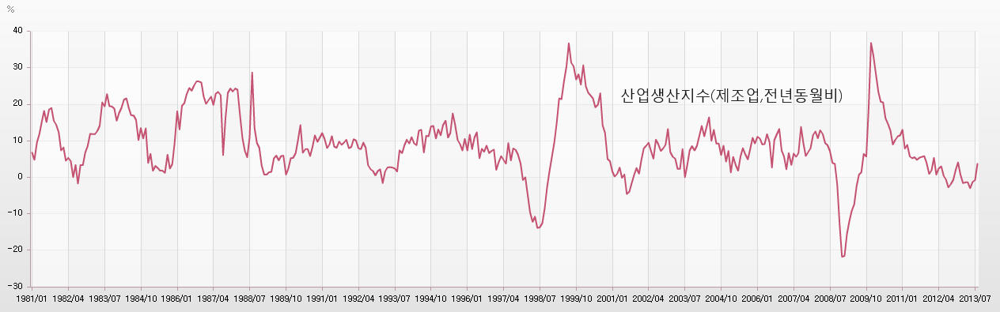

■ 산업생산지수란?
지금 현재 대한민국의 물질적 부가 얼마나 증가하고 있는지 궁금할 때 우리는 무엇을 해야 할까요? 너무가 쉬운 질문입니다. 대한민국의 물질적부가 얼마나 증가했는지 조사 한 GDP를 보면 됩니다.
하지만 문제가 그렇게 간단하지 않습니다. GDP는 3개월에 한번씩 발표가 된다는 치명적인 단점을 가지고 있습니다. 따라서 GDP를 이용해서는 우리의 궁금증을 해결할 수가 없습니다. 물론 3개월만 기다리면 되지만 우리는 매달 대한민국의 물질적부를 확인하고 싶습니다.
뭔가 획기적인 방법이 없는 것일까요? 바로 이때 우리가 이용할 수 있는 것이 산업생산지수입니다.
산업생산지수
산업생산지수란 대한민국 공장에서 각종 물건이 과거에 비해 얼마나 많이 생산되고 있는지 조사를 한 것입니다. 만약 산업생산지수가 팍팍 증가하고 있다면 공장에서 각종 물건이 과거에 비해 더 많이 생산되고 있다는 이야기가 됩니다. 그리고 만약 산업생산지수가 팍팍 줄어들고 있다면 공장이 과거에 비해 잘 돌아가지 않고 있다는 이야기가 됩니다.
산업생산지수중에서 유명한 것으로는 광공업생산지수와 제조업생산지수가 있습니다. 광공업생산지수는 광산에서, 공장에서, 발전소에서 생산된 대한민국의 물질적 부를 조사한 것이고, 제조업생산지수는 우리가 흔히 생각하는 공장에서 나오는 물건의 생산량을 조사한 것입니다. 그리고 서비스업생산지수라는 것도 있는데 이것은 글자그대로 서비스업의 생산량을 조사한 것입니다.
산업생산지수의 실체
산업생산지수가 어떤 모습을 하고 있는지 궁금하신 분은 아래에 있는 그래프를 보면 됩니다.

그런데 산업생산지수의 자태가 그렇게 화려하지 만은 않습니다. 우리가 기대했던 화려한 자태는 온데 간데없고 끝없이 위로 올라만 가고 있습니다.
산업생산지수가 이렇게 끝없이 승천하는 이유는 간단합니다. 긴 시간의 흐름에서 보면 대한민국의 물질적 부가 끝없이 증가하기 때문입니다. 물론 단기적인 관점에서 보면 지난달보다 이번 달이 먹고 살기 팍팍할 수는 있습니다. 하지만 분명한 사실이 있습니다. 오늘 우리는 과거 어느 때보다 물질적으로 풍요한 삶을 살고 있다는 사실입니다. 그리고 10년 뒤에는 오늘보다 더 풍요로운 삶을 살고 있을 겁니다. 따라서 공장에서 나오는 각종 물건의 생산량을 조사한 산업생산지수는 끝없이 고공승천을 할 수밖에 없는 것입니다.
산업생산지수 전년동월비
9월의 자동차 생산량이 얼마나 증가 했는지 궁금할 때 우리는 8월과 비교를 해서는 안 됩니다. 8월에는 휴가를 떠나는 사람들이 많은 관계로 아무래도 생산량이 작을 수밖에 없습니다. 따라서 9월 자동차 생산증가율이 궁금하다면 작년 9월과 비교를 해야 합니다. 이렇게 작년 같은 달과 비교하는 것을 가리켜 전년동월비라 합니다.
산업생산지수 역시 마찬가지입니다. 대한민국 공장에서 생산되는 각종 물건이 얼마나 증가했는지 제대로 알고 싶다면 작년 같은 달과 비교를 해야 합니다. 이같은 원리를 이용해 산업생산지수를 전년동월비로 바꾼 것이 아래의 그래프입니다.

이렇게 전년동월비로 바꾸고 나니 산업생산지수 그 자체를 보았을 때는 쉽게 눈에 들어오지 않던 대한민국 경제의 파란만장했던 삶이 한 눈에 들어 옵니다.
세계 각국의 산업생산지수
세계 각국의 경제가 어떻게 돌아가고 있는지 궁금할 때 우리는 여러 가지 경제지표를 이용해 진단을 할 수 있습니다. 하지만 시간의 여유가 없다면 산업생산지수만 보면 됩니다. 예를 들어 미국의 경제가 어떤 상황에 있는지 알고 싶다면 우리는 굳이 이것저것 찾아볼 필요 없이 산업생산지수만 찾아보면 됩니다.
그런데 우리는 여기서 살짝 쫄게 됩니다. 혹시나 미국의 산업생산지수가 궁금하다고 미국통계청 홈페이지를, 일본의 산업생산지수가 궁금하다고 일본통계청 홈페이지를 찾아 가야하는 것은 아닌가 하고 말입니다. 하지만 절대 그런 염려는 하지 않아도 됩니다. 한국은행 통계정보시스템이나 세인트루이스 연방준비은행에서 세계 주요국의 산업생산지수를 쉽게 확인할 수 있기 때문입니다.
※ 관련 링크 : 한국은행 경제통계시스템→해외/북한→주요국제통계→산업생산지수